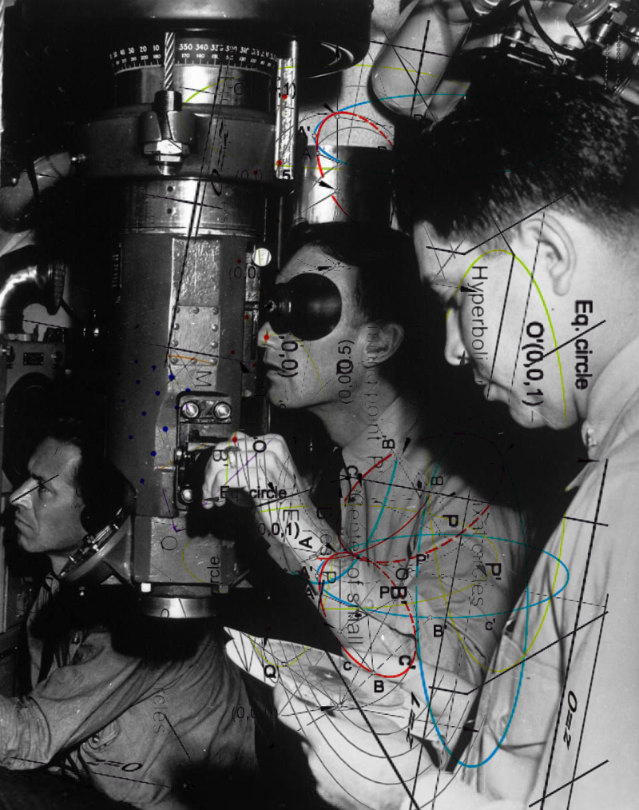
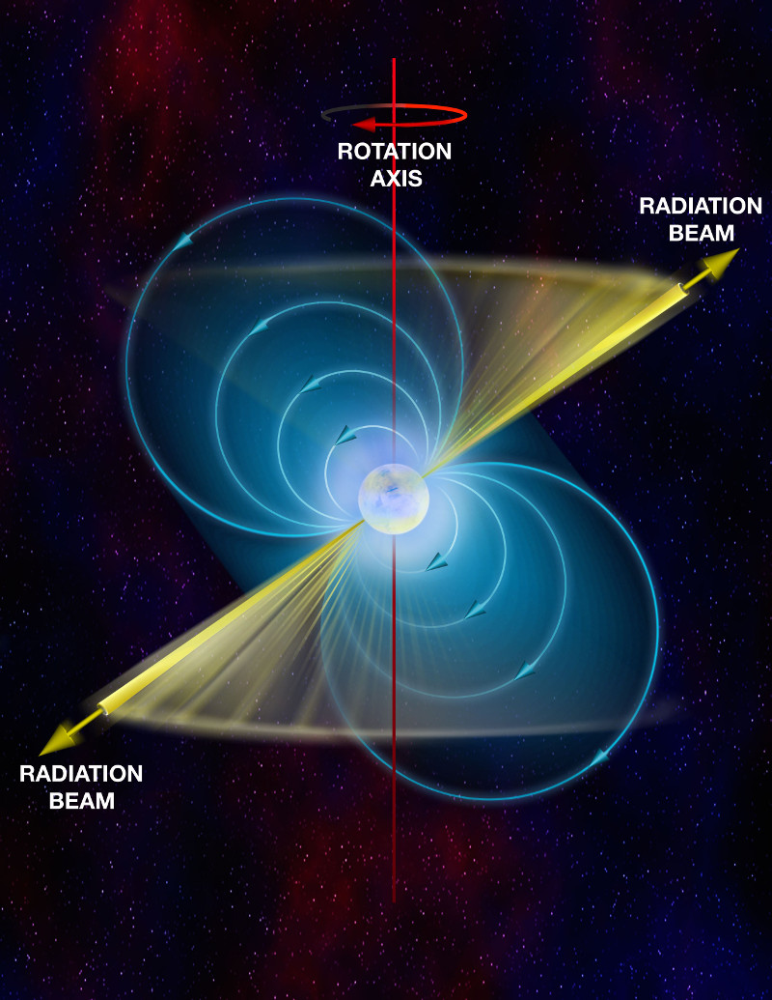
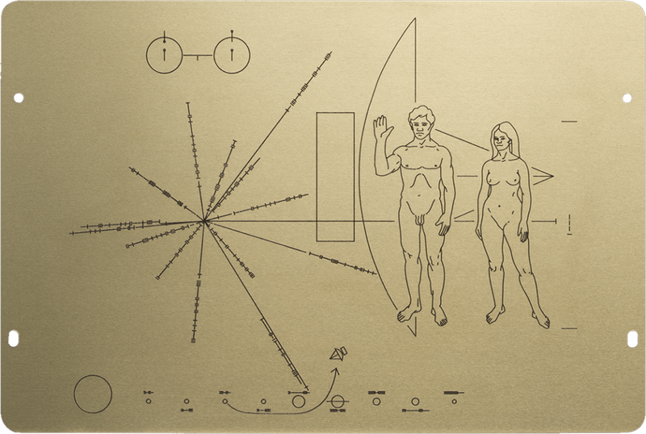
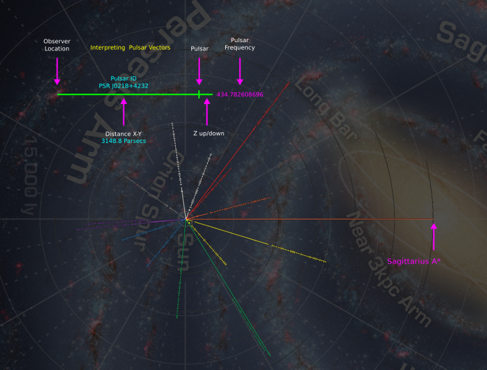
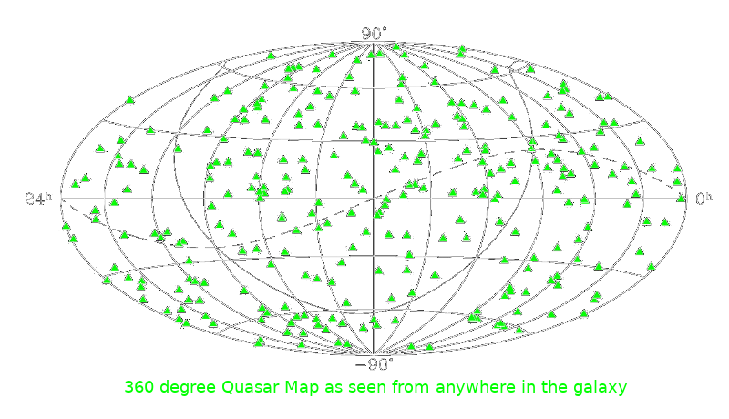
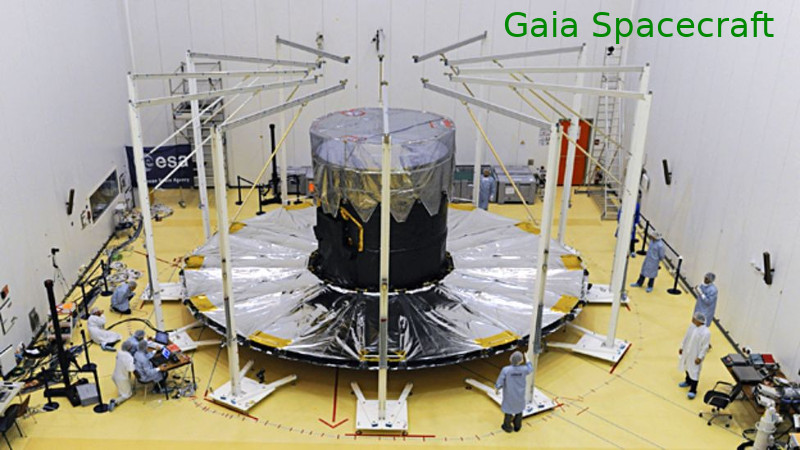
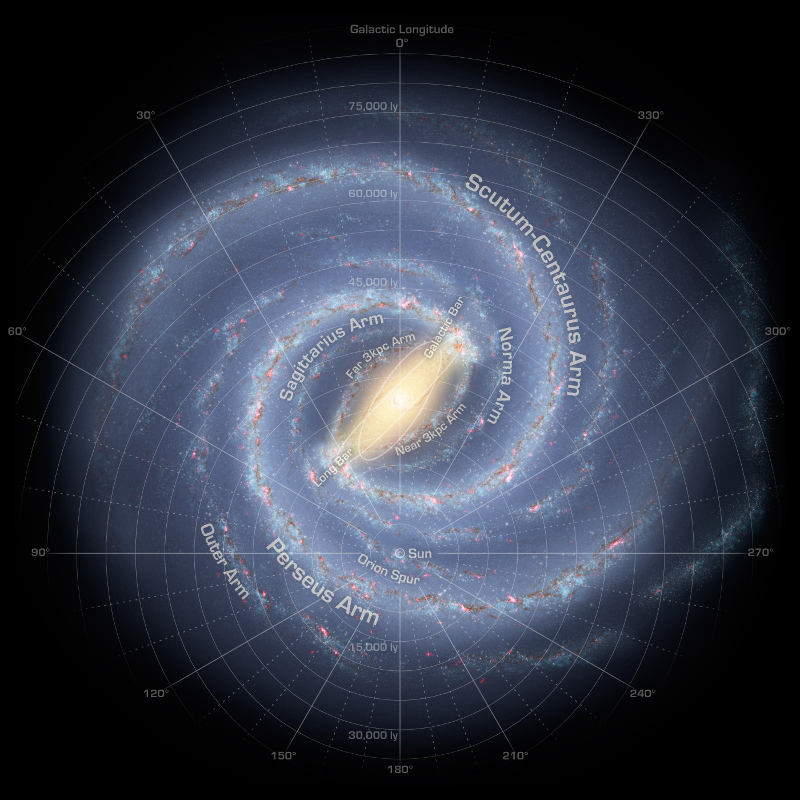
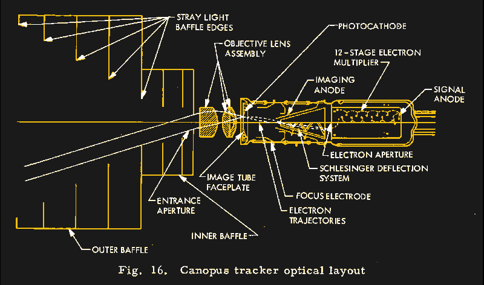

How Interstellar Navigation in Traveller Aligns with 21st Century Technology
A Historian's perspective. -- Morfydd James
An inferred navigation procedure for an interstellar journey via hyperspace extrapolated from 21st century technologies. -- Morfydd James
Gone are the days of working out hyperspatial manifold topology equations by slide rule. The volumes of logarithm tables that at one time filled a shelf at the navigator's station are used as decorations in trendy cafe bars. Even your pocket Univac and microfilm readers are now little more than novelties. Navcom takes all the drudgery out of galactic navigation. But that doesn't mean navigators should be ignorant of the processes. Here is a brief precis of the steps taken on a typical interstellar voyage with historical notations arranged in order from grandest scale down to arrival. Included are examples of the ancestor technologies dating back centuries.

It is virtually impossible to get "lost" in space. (it is possible to get lost in hyperspace but that topic is beyond the scope of this essay)
All ships are equipped with "X-Pulse", the Pulsar Positioning System. X-Pulse continuously tracks multiple sub-millisecond X-ray pulsars and transfers this data to Navcom for processing. Data is corrected for relativistic effects, lightspeed delay, gravitational lensing, and other known distortion factors before being superimposed on Navcom's internal database. Getting a reliable position and velocity vector takes no more than a few minutes and is done entirely in the background.
Pulsars are fast spinning neutron stars that sweep out easily detectable pulses like a lighthouse. Each pulsar has its own pulse frequency that can be used to identify it. Pulsars are indexed with PSR codes; "PSR JNNNN±DDDD" where NNNN is the longitude and DDDD is +/-Declination. The Pulsar in the Crab Nebula, for instance, is "PSR J0534+2200". The Crab Nebula pulsar has a period of 33 milliseconds. The first Pulsar was discovered by Jocelyn Bell Burnell in 1967. She was 24 years old. Her discovery was so important to astrophysics that Antony Hewish, and Martin Ryle won the Nobel Prize for it! We have mapped about 2000 pulsars within or near the galaxy to this point.

The first pulsar map was devised by Carl Sagan, Linda Salzman, and Frank Drake for the Pioneer space probes. The diagram very neatly illustrates the principle of pulsar navigation. Each pulsar blinks at a known rate printed in binary adjacent to a line indicating the direction and distance from Earth. There are lines leading to 14 pulsars and a longer reference line without numbers that extends to the galactic center. Superimposed is a rendering of the delicious "Viande d'Homme" standing next to a barbecue grill.


Fast X-ray pulsars are better suited to shipboard navigation as the detection equipment is more compact (compared to radio telescopes). ESA and NASA are currently developing the XNAV Pulsar Navigation System for deep space navigation. Shown below is a prototype. As the technology matures the size will come down.
It is not enough to know where you are. You also need to know where your destination is. Everything in the galaxy moves. Star clusters spin and churn. Light is slow enough to delay observable changes in distant landmarks. It can be very difficult to know which way your craft is oriented. The Quasar Compass neatly solves this problem with a complete onboard quasar chart and sensitive quasar specific optical calibrators. After a rough attitude fix based on X-Pulse data, Navcom conducts fine adjustments based on the Quasar Compass conclusions. You now know your directions down to a thousandth of a milliarcsecond.
Everything in the galaxy moves. Fast. And in chaotic directions. You won't find any absolute direction finders inside it. Fortunately, Quasars are so very bright and so very distant that they are essentially fixed in place. If the galaxy were a large pizza one meter across, then the nearest Quasar would be as far over your head as a cruising passenger jet. They are far away but we can still detect them. Quasars are the most energetic objects known and can release more energy than 100,000 galaxies at once. First discovered in the 1950s, they are now believed to be accretion discs falling into supermassive black holes at the center of early active galaxies. At this time over 700,000 quasars have been identified. Quasars are indexed by QSO numbers "QSO JNNNN±DDDD"
The Gaia spacecraft, launched by the European Space Agency in 2013, has precisely pinpointed the positions of multiple thousands of Quasars into a chart that can be used to orient any spacecraft anywhere in the galaxy.


As you pilot your ship across great distances and then through smaller scaled, more crowded spaces, Navcom will switch from larger coordinate systems to more and more local variations. The largest you will encounter is the GCS. The milky way galaxy is 100,000 ly across and for most of the disc, 1000 ly thick. imagine a large pizza one meter across and one centimeter thick. Yes its thicker towards the middle. Go look at some pictures. Navcom provides GCS in both Cartesian and Polar systems depending on the circumstances. GDW descibes the Traveller Galactic Coordinate System as Polar, measured in decimilliradians (62831 dm-radians = 360 degrees) from a reference world, and parsecs from galactic center. See page 152 "The Traveller Book" by Marc W. Miller, GDW 1982.
The first GCS was devised by William Herschel in 1785 and has undergone several refinements since then. The current version was devised by the IAU in 1958. Sol is at the origin. Zero degrees Galactic Longitude is towards galactic center (Sagittarius A*) and increases anticlockwise 0° to 360°. The North Galactic Pole is not far from Arcturus ( RA 12h 49m, DEC +27.4°). This is an Earth Centrist system and may seem odd that Sagittarius A* is not chosen as the center point. There are differing versions that either account for or ignore the slow galactic rotation, as well as XYZ Cartesian coordinate varieties. Pick one and stick to it.

Now that you've exited Hyperspace successfully within the target planetary system, you have to worry about banging into things. Massive things swerving around orbits at tens of kilometers per second. It's all fun and games till some vainglorius coxswain slams into Uranus. You're going to need a complete ephemerides for the system. Your Navcom will automatically download the complete set of files which are continuously broadcast from the navigation buoys.
"Ephemerides" are a frequently updated database of the precise position and velocity of every significant mass within a star's Heliopause (Stellapause). The Jet Propulsion Laboratory compiles several sets of Ephemeris, "DE440" being the most recent. You can access readable information from the DE440 by using JPL's Horizons System. Or you can download the entire DE440 directly from JPL.
Click the image to visit an interactive viewer
While that's downloading, Navcom will ping "System Traffic Control". STC will provide your ship's exact position and velocity vectors from their antennas in the local coordinate format. Very handy as you could pop out of hyperspace with any random attitude and velocity. Navcom will then automatically negotiate the pilot's flight-plan with STC to begin maneuvers.
Nasa operates the Deep Space Network just for this purpose. The coordinates used in the Solar System are "Ecliptic Cartesian Coordinates" based on the International Celestial Reference Frame (ICRF) administered by the IAU. [NOTE: Wikipedia is NOT a primary source and should NEVER be cited as one]
Navcom will then use the Canopus Tracker to align the ship's Inertial Reference Platform with local star data broadcast from the buoy.
Nasa first used Star Trackers for spacecraft navigation in the Mariner Program. The best candidate star was Canopus which was bright, but far enough from the ecliptic plane that the Sun could never interfere with the view. The technology is fully described in NASA Technical Manual 33-681 pp 102-109

Upon approach to the destination planet, Navcom will contact "Tracking and Orbit Control" to negotiate an orbital plan that best matches the pilot's intended final destination, whether that might be reentry or rendezvous and docking. TaOC tracks all orbital traffic and debris above hazzard threshhold. Navcom now switches over to Equatorial coordinates.
NORAD tracks all objects in Earth orbit and provides data free of charge in the form of TLEs (Two Line Elements). A TLE is a compact text format that fully describes the position and velocity vectors of orbital objects. Many free software packages use TLEs to predict and display spacecraft orbits. TLEs can be downloaded from Celestrack. Install some free orbit software or visit Heavens Above.
Click the image to visit an interactive viewer

This is the TLE for the International Space Station: (13 June)
ISS (ZARYA)
1 25544U 98067A 22164.52395760 .00005936 00000+0 11198-3 0 9997
2 25544 51.6450 354.7314 0004342 232.1899 215.8096 15.49979136344610
You can decode TLEs with the charts at Celestrak.
Congradulations! You're safe in the hanger. Go get yourself a peppermint mocha.
Don't get lost.
.
.
.
.
.
.
.
.
.